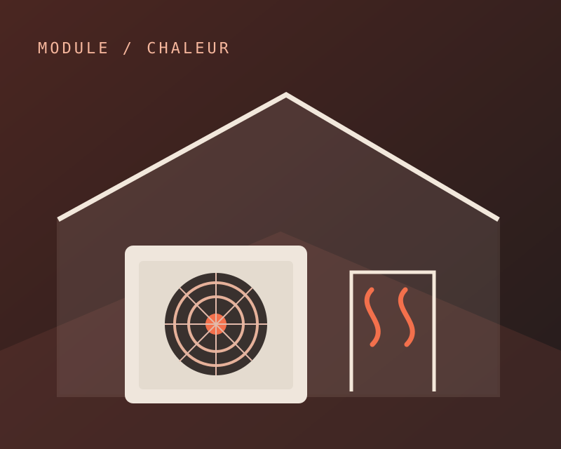

Échanger sur votre installation
Faire le point sur votre système actuel, ses performances et vos besoins.
Chaudières, pompes à chaleur et systèmes thermiques : choisissez une installation adaptée à votre bâtiment et à vos habitudes.
Étudier mon besoinPour une maison ou un espace professionnel, une installation de chauffage doit répondre à plusieurs contraintes : configuration des lieux, équipement existant, besoins en eau chaude et habitudes de consommation. Chez Omnichauff, nous étudions votre situation avant d’orienter vos choix.
Notre activité comprend l’installation de chaudières à gaz, de solutions bois ou granulés, ainsi que de pompes à chaleur air-air et air-eau. Nous intervenons également pour l’entretien et le dépannage des équipements thermiques.
Une approche progressive et des explications claires pour préparer chaque intervention.
Faire le point sur votre système actuel, ses performances et vos besoins.
Comparer les solutions possibles selon le logement et les contraintes techniques.
Définir les opérations nécessaires à l’installation, puis organiser la mise en œuvre.


Un chauffage qui consomme trop, un appareil vieillissant ou une température difficile à réguler sont autant de raisons de réexaminer une installation. Le remplacement n’est pas toujours la seule réponse : un entretien ou une intervention ciblée peut également être pertinent selon la situation.
Nos équipes vous apportent les informations nécessaires pour avancer en connaissance de cause. Vous disposez ainsi d’un interlocuteur pour l’installation, la maintenance et, si besoin, le dépannage d’une chaudière.
Quelques réponses pour préparer votre échange avec l’équipe Omnichauff. Pour un cas particulier, une prise de contact reste nécessaire.
Oui. Omnichauff présente sur son site la pose de pompes à chaleur air-air et air-eau, en complément d’autres systèmes de chauffage.
Oui, l’entretien et le dépannage figurent parmi les activités de l’entreprise. Décrivez le modèle et le symptôme pour préciser la demande.
Non. L’entreprise est implantée à Bersée et mentionne des interventions autour de Valenciennes et de Douai.
Omnichauff est implantée au 521 Rue de la Broderie, 59235 Bersée. L’entreprise intervient notamment dans le secteur de Valenciennes et autour de Douai. Contactez l’équipe pour étudier la faisabilité de votre projet selon votre localisation.
Contacter Omnichauff ↗Parlons de votre installation et trouvons la bonne suite à donner à votre demande.